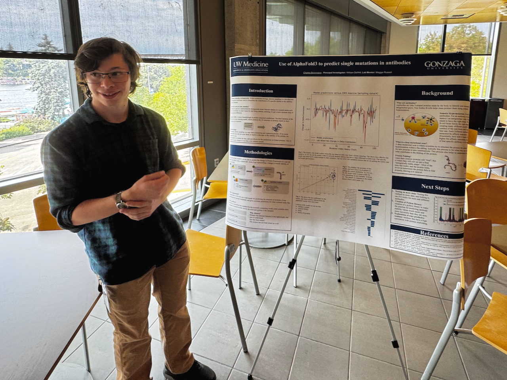

Future Plans

I will be pursuing a PhD in Computer Science at the University of Idaho starting in the Fall of 2026. My research focuses on Human-Computer Interaction and educational software.
Thank you all for your support and guidance throughout this journey!
Publications & Research
Peer-Reviewed Papers
Olivares, D., Bennington, C., & Skillestad, A. (2025). Large Language Models in Programming: A Meta-Analysis of Tools, Users, and Human-Computer Interaction Themes.
Published at AHFE International 2026.
Conference Posters
Bennington, C., Russel, M., & DeWitt, W. (2025). Use of AlphaFold3 to predict single point mutations in anti-bodies.
UW Genomics REU showcase, Seattle, WA.
Bennington, C. & Olivares, D. (2025). VS Code as Community: The Coding Social Hub for Peer Engagement and Collaboration.
SIRC, Spokane, WA.
Current Research
I am currently working on a project called DataFlippers. DataFlippers enables novices to Learn machine learning and data science through intuitive drag and drop blocks! I am planning on submitting my work to the Journal of open source software (JOSS) around may.
Links